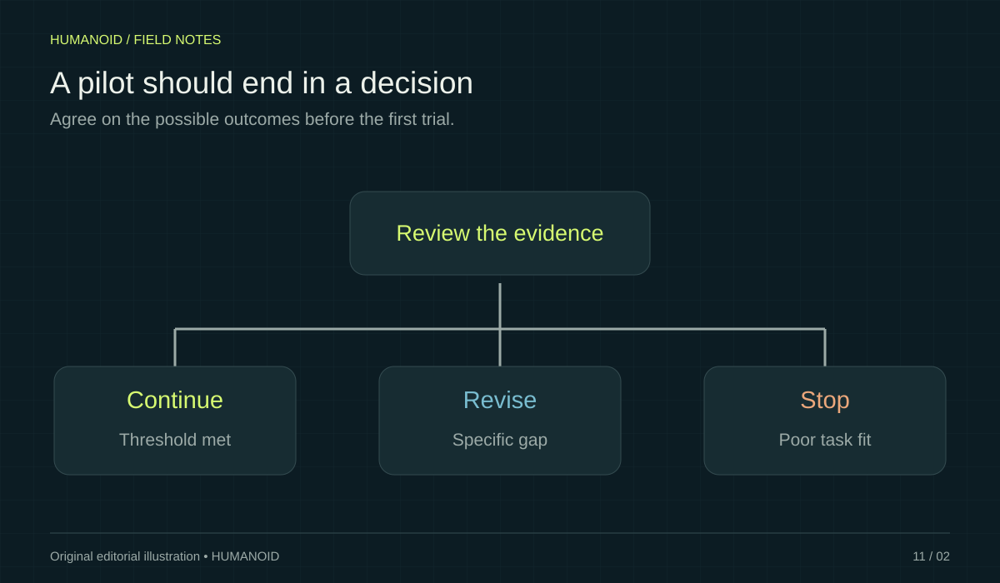

Give the pilot an owner, a bounded workflow, and a decision rule before it begins.
A pilot should help an organization decide what to do next. Without that decision in view, it can become a long demonstration that produces enthusiasm but little usable evidence. A narrow trial with agreed measurements is easier to interpret than an ambitious project that changes its goal every week.
Choose a bounded application
Specify the objects, locations, operating hours, and conditions included in the trial. Identify what remains outside the scope. A narrow boundary does not make the pilot less ambitious; it gives the team a way to understand the result and distinguish integration issues from broader limitations.
Set the baseline and the threshold
Describe how the work is currently done and what improvement would justify continuing. Select a small number of useful measures, such as completed tasks, interventions, and time to recover. Agree on how those measures will be collected and who can approve changes to the test.
Assign operational ownership
Name the people responsible for the robot, the workspace, supplier coordination, and data collection. Define the process for pausing work and investigating an unexpected event. Follow the supplier’s procedures and the site’s applicable requirements when designing the application and supervision arrangements.

Plan the end before the start
Set a review date and the possible outcomes: continue, revise the application, extend the evaluation for a specific reason, or stop. Record unresolved questions with owners. A pilot that rules out an unsuitable configuration can be a useful result if it prevents a larger commitment based on weak assumptions.
Write a pilot charter that fits on one page
A useful charter names the workflow, the test area, the duration, the responsible people, and the decision expected at the end. Add the main assumptions in a separate box. For example, a trial may assume that containers arrive in an agreed position and that a trained person is available for resets. Those assumptions are part of the proposed application. Making them visible prevents a narrow trial from being mistaken for evidence about unrestricted operation.
Include a simple change process. If the team changes the objects, software version, or success definition halfway through the pilot, record when and why. It may be sensible to make the change, but the resulting observations should not silently merge into the earlier dataset. A clear record lets reviewers understand whether performance improved or the task became easier.
Design an evidence package before the first run
Choose a compact record for each attempt: task identifier, starting conditions, configuration, outcome, elapsed time, intervention, and recovery note. Decide where logs will be stored and who will check their completeness. If a recording is useful, explain what it is intended to establish rather than collecting footage without a review plan. The evidence package should answer the pilot's decision question with as little interpretation as practical.
Prepare an example report using an imaginary attempt before the robot arrives. Ask the operations owner and technical owner to read it independently. If they draw different conclusions, revise the definitions. Words such as success, interruption, and available can mean different things to different teams. Resolving those differences early is cheaper than trying to reinterpret several weeks of inconsistent notes.
Use decision gates instead of an open-ended trial
Divide the pilot into a setup gate, a representative task gate, and a final review. At the setup gate, confirm that the intended configuration and evidence collection are working. At the task gate, check whether the agreed workflow can be evaluated meaningfully. The final review considers the accumulated results and the unanswered questions. Give each gate a named decision owner so that a promising demonstration does not automatically become a larger commitment.
An extension should answer a specific remaining question. For example, the team may need another session with a wider range of container positions or a replacement component. State what new evidence would justify the extra work and set a new review date. If the extension has no distinct question, it may simply postpone a difficult decision. A disciplined stop, redesign, or narrower application can be a valuable result of the pilot.
Your next step.
- State the decision the pilot must support.
- Agree on a baseline and review date.
- Assign owners for operation and evidence collection.
Sources & further reading
Primary sources and manufacturer documentation for the examples and further investigation. Recommendations in this article are HUMANOID’s editorial guidance.
Boston Dynamics: Atlas customer journey ↗Agility Robotics: industrial automation approach ↗Originally prepared and references reviewed: 24 October 2026. Expanded with practical guidance and original illustrations: 25 October 2026. Editorial archive date: 22 Jun 2026. This is original editorial content, not a record of a historical product launch, independent test, or purchase.